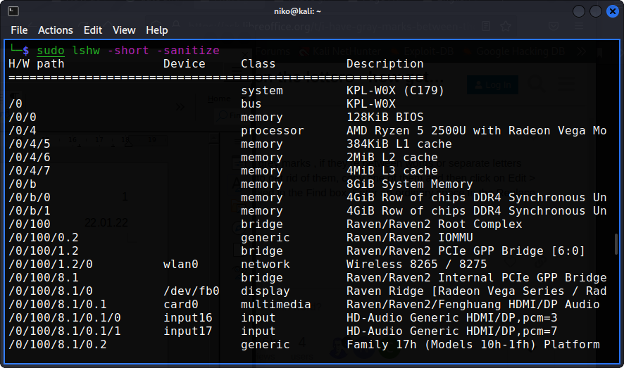

Niko
Nyman Tehtävä
Haaga-Helia University of Applied Science
ICT4TN021-3018
H1(b)
lshw on ohjelma, joka listaa tietoja tietokoneesta. Lisää tietoa komennolla: man lshw tai sivulta http://lshw.ezix.org/
Komento: sudo lshw -short -sanitize
sudo komennolla käyttäjä saa root oikeudet tehtävän suorittamiseen.
-sanitize sanitize output (remove sensitive information like serial
Tätä komentoa voidaan käyttää, kun ei haluta näyttää arkaluontoista tietoa
-short output hardware paths
Näyttää H/W path kompaktissa muodossa

H/W path näyttää laitteistopolun.
Device kertoo laitteen nimen, esimerkiksi wlan0 on koneeni wireless NIC nimi
Class kertoo luokan
Description:ssa näkyy tarkempaa tietoa; merkki ja malli
Näyttäisi siltä, että system KPL-W0X (C179) on tietokoneeni emolevy ja sen päälle lähtee rakentumaan muu laitteisto. /0 .